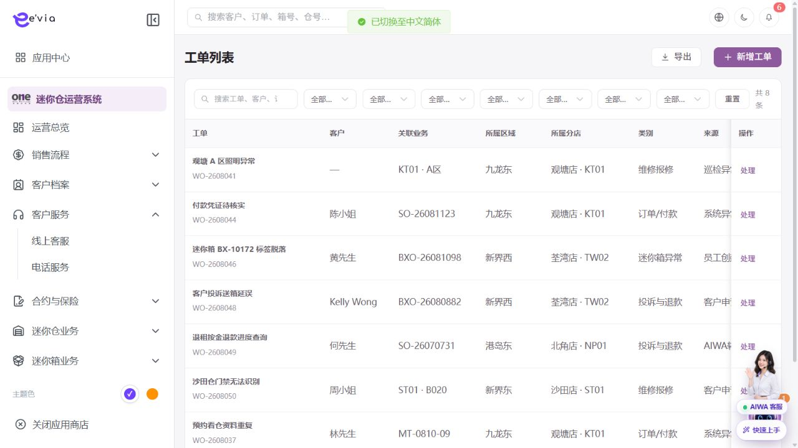
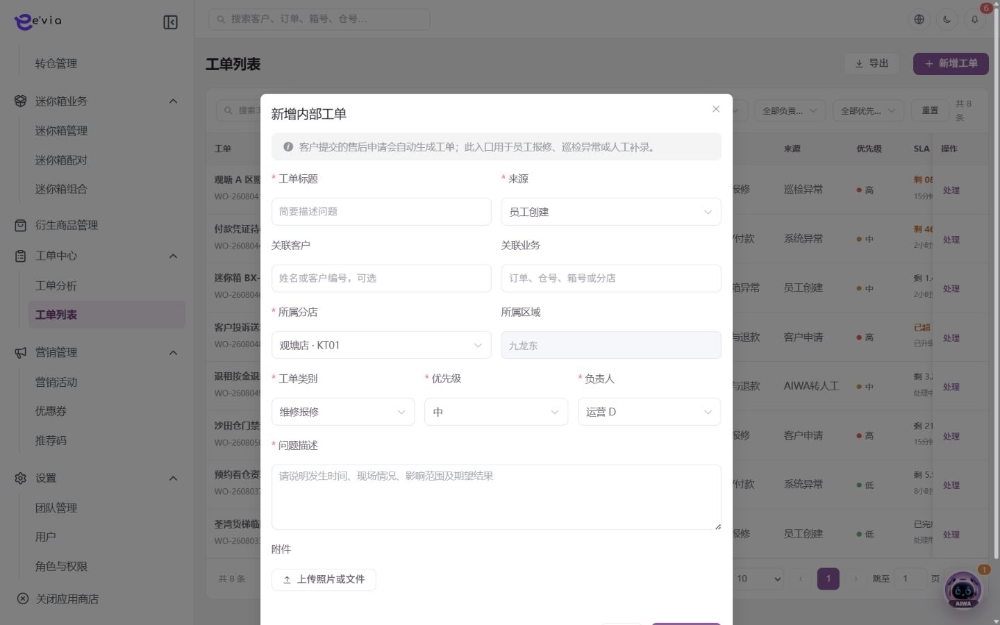
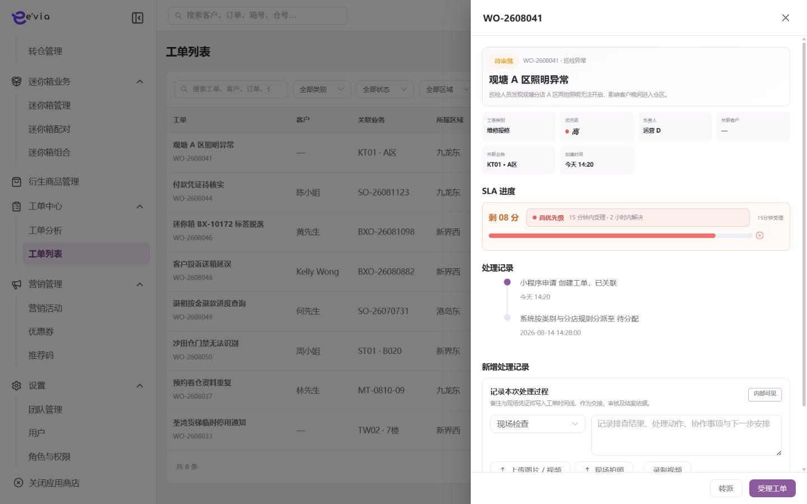

工单中心 PRD
下载 Word 文档工单中心 PRD
运营后台研发详细需求规格 · V2.3 · 2026-09-09
1 文档目标与范围
统一受理客户售后和内部报修，完成分派、接单、签到、处理、复核和关闭。 本文档明确页面字段、操作流程、业务规则、跨端契约、权限和验收条件。
| 属性 | 内容 |
|---|---|
| 文档编号 | OS-OPS-PRD-23 |
| 产品基线 | AiwaBot产品原型 V3.2 与 OneStorage运营后台原型 V1.1 |
| 版本 | V2.3 2026-09-09 |
1.1 原型界面依据
本模块界面直接取自 AiwaBot产品原型-v3.2.html。真实截图及功能点对应说明见“界面与功能对应说明”。
2 界面与页面结构
2.1 界面与功能对应说明
以下真实原型截图用于确定页面区域、入口和交互位置；字段校验、状态变化和服务端处理以本PRD功能规格为准。

| 说明项 | 界面辅助说明 |
|---|---|
| 对应功能点 | OS-OPS-PRD-23-FP02 转派 |
| 页面区域 | 工单中心列表与处理入口由查询条件、结果列表、状态标识、行级操作和分页区组成。 |
| 交互要求 | 查询条件可组合、重置并在返回时保留；列表与导出共用同一数据范围；按钮依据权限、状态和allowedActions显示。 |
| 状态与权限 | 动作由allowedActions控制；无权限隐藏入口，接口仍执行403校验并记录审计。 |

| 说明项 | 界面辅助说明 |
|---|---|
| 对应功能点 | OS-OPS-PRD-23-FP01 新增工单 |
| 页面区域 | 新增界面按业务分组展示表单字段、关联对象选择、保存与取消操作。 |
| 交互要求 | 必填和格式错误在字段下方提示；关联对象实时校验；保存期间按钮防重复，关闭已修改表单需二次确认。 |
| 状态与权限 | 动作由allowedActions控制；无权限隐藏入口，接口仍执行403校验并记录审计。 |

| 说明项 | 界面辅助说明 |
|---|---|
| 对应功能点 | OS-OPS-PRD-23-FP03 接单与签到；OS-OPS-PRD-23-FP04 提交处理报告；OS-OPS-PRD-23-FP05 复核与关闭 |
| 页面区域 | 处理界面展示对象摘要、当前状态、流程节点、执行字段、处理记录以及下一步动作。 |
| 交互要求 | 动作只在当前状态允许时可用；提交时携带expectedVersion，成功后回源刷新状态、时间线、SLA和allowedActions。 |
| 状态与权限 | 动作由allowedActions控制；无权限隐藏入口，接口仍执行403校验并记录审计。 |
2.3 筛选条件
| 筛选项 | 规则 |
|---|---|
| 工单、客户、订单、仓号或箱号 | 支持组合查询、重置和返回保留。 |
| 类别 | 支持组合查询、重置和返回保留。 |
| 来源 | 支持组合查询、重置和返回保留。 |
| 优先级 | 支持组合查询、重置和返回保留。 |
| 状态 | 支持组合查询、重置和返回保留。 |
| SLA风险 | 支持组合查询、重置和返回保留。 |
| 负责人 | 支持组合查询、重置和返回保留。 |
| 店铺 | 支持组合查询、重置和返回保留。 |
3 列表字段规格
>| 字段ID | 字段 | 来源 | 展示与交互规则 |
|---|---|---|---|
| OS-OPS-PRD-23-L01 | 工单 | 业务主域 | 详情与导出保持一致；空值显示—，不使用模拟值补齐。 |
| OS-OPS-PRD-23-L02 | 关联业务 | 业务主域 | 详情与导出保持一致；空值显示—，不使用模拟值补齐。 |
| OS-OPS-PRD-23-L03 | 类别 | 业务主域 | 详情与导出保持一致；空值显示—，不使用模拟值补齐。 |
| OS-OPS-PRD-23-L04 | 来源 | 业务主域 | 详情与导出保持一致；空值显示—，不使用模拟值补齐。 |
| OS-OPS-PRD-23-L05 | 优先级 | 业务主域 | 详情与导出保持一致；空值显示—，不使用模拟值补齐。 |
| OS-OPS-PRD-23-L06 | SLA | 业务主域 | 详情与导出保持一致；空值显示—，不使用模拟值补齐。 |
| OS-OPS-PRD-23-L07 | 负责人 | 服务端/关联主数据 | 显示姓名，离职或停用账号保留历史名称。 |
| OS-OPS-PRD-23-L08 | 状态 | 服务端/关联主数据 | 以标签显示服务端枚举；不可由前端自行推导。 |
| OS-OPS-PRD-23-L09 | 操作 | 服务端/关联主数据 | 根据allowedActions显示查看、编辑及状态动作；后端再次鉴权。 |
4 新增与编辑表单
| 字段ID | 字段 | 控件 | 必填 | 校验与保存规则 |
|---|---|---|---|---|
| OS-OPS-PRD-23-F01 | 工单类别 | 单选或下拉选择 | 必填 | 选项来自服务端字典；提交编码值，界面显示名称。 |
| OS-OPS-PRD-23-F02 | 来源 | 下拉选择 | 必填 | 选项来自线索来源字典；系统来源只读，人工新增可选择。 |
| OS-OPS-PRD-23-F03 | 客户 | 文本框 | 条件必填 | 去除首尾空格；保存原始值与标准化值。 |
| OS-OPS-PRD-23-F04 | 关联订单 | 文本框 | 条件必填 | 去除首尾空格；保存原始值与标准化值。 |
| OS-OPS-PRD-23-F05 | 仓位或箱号 | 文本框 | 条件必填 | 去除首尾空格；保存原始值与标准化值。 |
| OS-OPS-PRD-23-F06 | 店铺 | 单选或下拉选择 | 必填 | 选项来自服务端字典；提交编码值，界面显示名称。 |
| OS-OPS-PRD-23-F07 | 标题 | 文本框 | 条件必填 | 去除首尾空格；保存原始值与标准化值。 |
| OS-OPS-PRD-23-F08 | 问题描述 | 多行文本 | 条件必填 | 最多500字；拒绝或异常原因不得只输入空白。 |
| OS-OPS-PRD-23-F09 | 优先级 | 文本框 | 条件必填 | 去除首尾空格；保存原始值与标准化值。 |
| OS-OPS-PRD-23-F10 | 负责人 | 单选或下拉选择 | 必填 | 选项来自服务端字典；提交编码值，界面显示名称。 |
| OS-OPS-PRD-23-F11 | 执行团队 | 单选或下拉选择 | 必填 | 选项来自服务端字典；提交编码值，界面显示名称。 |
| OS-OPS-PRD-23-F12 | 预约时间 | 日期或日期时间 | 必填 | 服务端校验起止顺序、营业日和截止规则。 |
| OS-OPS-PRD-23-F13 | SLA策略 | 文本框 | 条件必填 | 去除首尾空格；保存原始值与标准化值。 |
| OS-OPS-PRD-23-F14 | 附件 | 文件上传 | 条件必填 | 使用短期签名上传，校验类型、大小、哈希和病毒扫描结果。 |
| OS-OPS-PRD-23-F15 | 客户可见说明 | 多行文本 | 条件必填 | 最多500字；拒绝或异常原因不得只输入空白。 |
| OS-OPS-PRD-23-F16 | 内部备注 | 多行文本 | 条件必填 | 最多500字；拒绝或异常原因不得只输入空白。 |
5 功能点详细设计
| 功能编号 | 功能点 | 目标 |
|---|---|---|
| OS-OPS-PRD-23-FP01 | 新增工单 | 校验关联对象和联系人，生成WO编号及SLA截止时间。 |
| OS-OPS-PRD-23-FP02 | 转派 | 校验团队、技能和数据范围并通知新负责人。 |
| OS-OPS-PRD-23-FP03 | 接单与签到 | 由工单小程序回传接单、定位、时间和必要照片。 |
| OS-OPS-PRD-23-FP04 | 提交处理报告 | 填写原因、措施、材料、耗时和结果。 |
| OS-OPS-PRD-23-FP05 | 复核与关闭 | 后台确认报告和客户结果，不合格退回并重启SLA规则。 |
5.1 新增工单
功能编号：OS-OPS-PRD-23-FP01
功能目的：校验关联对象和联系人，生成WO编号及SLA截止时间。
使用角色与入口：具备本模块创建权限的运营人员；从模块列表右上角新增入口或关联对象快捷入口进入。入口显示前校验菜单、动作和数据范围。
前置条件：用户登录有效并具备创建或批量权限；关联主数据有效且属于dataScope；页面已加载最新字典、业务配置和allowedActions。
界面操作：打开新增界面，按页面分组录入工单类别、来源、客户、关联订单、仓位或箱号、店铺、标题、问题描述、优先级、负责人、执行团队、预约时间；关联对象使用检索选择。点击保存前完成字段级和跨字段校验。
系统处理：服务端使用clientRequestId幂等校验，在事务内生成业务编号、主对象、初始状态和审计记录；事务提交后发布领域事件。校验关联对象和联系人，生成WO编号及SLA截止时间。
业务规则：重新打开保留原工单并增加处理轮次。服务端必须重复校验。
成功结果：页面提示“新增工单成功”，刷新对象状态、version、allowedActions、关联对象和时间线；如产生异步任务，同时显示任务编号和进度入口。
异常与恢复：400保留输入；403拒绝并审计；409要求刷新；超时按clientRequestId查询；部分成功显示明细和补偿入口。
跨端影响：客户小程序提交售后工单并查看客户可见节点；接收端打开后重新鉴权并回源。
验收条件：在允许状态下完成新增工单时仅产生一次预期数据变化和一次审计记录；越权、错误状态、重复提交及版本冲突均不得产生重复对象或越级状态。
5.2 转派
功能编号：OS-OPS-PRD-23-FP02
功能目的：校验团队、技能和数据范围并通知新负责人。
使用角色与入口：运营管理员、区域或门店负责人；从列表批量工具栏或详情页负责人区域进入。入口显示前校验菜单、动作和数据范围。
前置条件：用户登录有效；目标对象存在且属于用户dataScope；当前状态包含该动作；页面持有最新version和allowedActions。涉及金额、库存、附件或第三方结果时必须回源确认。
界面操作：选择记录后指定负责人或团队，界面显示客户、关联订单、店铺、负责人、预约时间、附件、客户可见说明、内部备注、状态和影响数量；确认前逐条标示不可分配原因。
系统处理：服务端调用POST /ops/v1/tickets/{id}/actions/{action}，校验权限、当前状态、expectedVersion和业务不变量，在事务中写入状态及时间线。校验团队、技能和数据范围并通知新负责人。
业务规则：高优先级必须指定负责人或值班队列；SLA按类别、优先级和营业时间计算。服务端必须重复校验。
成功结果：页面提示“转派成功”，刷新对象状态、version、allowedActions、关联对象和时间线；如产生异步任务，同时显示任务编号和进度入口。
异常与恢复：400保留输入；403拒绝并审计；409要求刷新；超时按clientRequestId查询；部分成功显示明细和补偿入口。
跨端影响：工单小程序执行接单、签到、处理和上报；接收端打开后重新鉴权并回源。
验收条件：在允许状态下完成转派时仅产生一次预期数据变化和一次审计记录；越权、错误状态、重复提交及版本冲突均不得产生重复对象或越级状态。
5.3 接单与签到
功能编号：OS-OPS-PRD-23-FP03
功能目的：由工单小程序回传接单、定位、时间和必要照片。
使用角色与入口：当前对象负责人、被分派执行人或获授权管理员；从列表行操作、详情页主操作区或待办入口进入。入口显示前校验菜单、动作和数据范围。
前置条件：用户登录有效；目标对象存在且属于用户dataScope；当前状态包含该动作；页面持有最新version和allowedActions。涉及金额、库存、附件或第三方结果时必须回源确认。
界面操作：在详情页执行接单与签到，填写或核对客户、关联订单、店铺、负责人、预约时间、附件、客户可见说明、内部备注、状态；界面随步骤显示当前节点、下一步和可撤回条件。
系统处理：服务端调用POST /ops/v1/tickets/{id}/actions/{action}，校验权限、当前状态、expectedVersion和业务不变量，在事务中写入状态及时间线。由工单小程序回传接单、定位、时间和必要照片。
业务规则：高优先级必须指定负责人或值班队列；SLA按类别、优先级和营业时间计算。服务端必须重复校验。
成功结果：页面提示“接单与签到成功”，刷新对象状态、version、allowedActions、关联对象和时间线；如产生异步任务，同时显示任务编号和进度入口。
异常与恢复：400保留输入；403拒绝并审计；409要求刷新；超时按clientRequestId查询；部分成功显示明细和补偿入口。
跨端影响：后台转派、退回或关闭实时同步执行端allowedActions；接收端打开后重新鉴权并回源。
验收条件：在允许状态下完成接单与签到时仅产生一次预期数据变化和一次审计记录；越权、错误状态、重复提交及版本冲突均不得产生重复对象或越级状态。
5.4 提交处理报告
功能编号：OS-OPS-PRD-23-FP04
功能目的：填写原因、措施、材料、耗时和结果。
使用角色与入口：具备导出或报告权限的用户；从列表工具栏或报告生成入口进入。入口显示前校验菜单、动作和数据范围。
前置条件：用户具备导出或报告权限，当前查询已完成且筛选合法；导出列不得超出字段权限，任务配额未超限。
界面操作：沿用当前筛选与列权限，选择导出范围或报告格式；任务进入进度中心，完成后提供限时下载。
系统处理：服务端冻结查询条件和dataScope并创建异步任务；逐条校验权限、版本和状态，返回成功、失败及原因明细。填写原因、措施、材料、耗时和结果。
业务规则：导出继承当前筛选、数据范围和字段权限；文件使用短期签名地址；生成、下载和失败均记录审计。。服务端必须重复校验。
成功结果：界面创建提交处理报告任务并显示任务编号、生成进度、有效期和下载入口；下载内容与任务冻结的筛选及列权限一致。
异常与恢复：400保留输入；403拒绝并审计；409要求刷新；超时按clientRequestId查询；部分成功显示明细和补偿入口。
跨端影响：客户小程序提交售后工单并查看客户可见节点；接收端打开后重新鉴权并回源。
验收条件：相同筛选和字段权限生成的提交处理报告数据量与列表一致；重复提交复用幂等结果，越权字段不进入文件。
5.5 复核与关闭
功能编号：OS-OPS-PRD-23-FP05
功能目的：后台确认报告和客户结果，不合格退回并重启SLA规则。
使用角色与入口：具备审批、财务或复核权限的人员；从待办中心、列表行操作或详情页审批区进入。入口显示前校验菜单、动作和数据范围。
前置条件：用户登录有效；目标对象存在且属于用户dataScope；当前状态包含该动作；页面持有最新version和allowedActions。涉及金额、库存、附件或第三方结果时必须回源确认。
界面操作：详情页展示申请信息、金额/附件、历史意见及客户、关联订单、店铺、负责人、预约时间、附件、客户可见说明、内部备注、状态；选择通过或拒绝，拒绝原因必填，提交前二次确认。
系统处理：服务端调用POST /ops/v1/tickets/{id}/actions/{action}，校验权限、当前状态、expectedVersion和业务不变量，在事务中写入状态及时间线。后台确认报告和客户结果，不合格退回并重启SLA规则。
业务规则：关闭前必须有解决结果。服务端必须重复校验。
成功结果：页面提示“复核与关闭成功”，刷新对象状态、version、allowedActions、关联对象和时间线；如产生异步任务，同时显示任务编号和进度入口。
异常与恢复：400保留输入；403拒绝并审计；409要求刷新；超时按clientRequestId查询；部分成功显示明细和补偿入口。
跨端影响：工单小程序执行接单、签到、处理和上报；接收端打开后重新鉴权并回源。
验收条件：在允许状态下完成复核与关闭时仅产生一次预期数据变化和一次审计记录；越权、错误状态、重复提交及版本冲突均不得产生重复对象或越级状态。
6 状态机与业务规则
| 对象 | 状态流转 |
|---|---|
| 工单中心 | 待受理→已分派→已接单→已签到→处理中→待复核→已解决→已关闭；待客户补充/已退回/已取消 |
| 异步任务 | 待执行→执行中→成功/失败→重试/人工处理 |
| 规则ID | 业务规则 |
|---|---|
| OS-OPS-PRD-23-R01 | 高优先级必须指定负责人或值班队列 |
| OS-OPS-PRD-23-R02 | SLA按类别、优先级和营业时间计算 |
| OS-OPS-PRD-23-R03 | 附件和定位遵循最小必要原则 |
| OS-OPS-PRD-23-R04 | 关闭前必须有解决结果 |
| OS-OPS-PRD-23-R05 | 重新打开保留原工单并增加处理轮次 |
| OS-OPS-PRD-23-R06 | 所有写请求携带clientRequestId和expectedVersion，重复请求返回首次结果 |
| OS-OPS-PRD-23-R07 | 服务端返回allowedActions，前端仅据此展示按钮，后端仍逐动作鉴权 |
| OS-OPS-PRD-23-R08 | 列表、详情、关联选择器、统计和导出使用同一数据范围 |
| OS-OPS-PRD-23-R09 | 创建、编辑、状态流转、导出、下载和审批均记录操作审计 |
| OS-OPS-PRD-23-R10 | 第三方调用失败不得伪装主业务成功，进入可重试或人工处理状态 |
7 BPMN流程

客户、后台、执行端和领域服务节点必须与状态机一致。
8 跨端交互规则
| 规则ID | 交互规则 |
|---|---|
| OS-OPS-PRD-23-X01 | 客户小程序提交售后工单并查看客户可见节点 |
| OS-OPS-PRD-23-X02 | 工单小程序执行接单、签到、处理和上报 |
| OS-OPS-PRD-23-X03 | 后台转派、退回或关闭实时同步执行端allowedActions |
客户小程序仅访问本人数据，工单小程序仅访问本人或团队任务
深链打开后重新校验身份、权限和最新状态
金额、库存、状态和allowedActions必须回源
离线重试沿用同一clientRequestId
9 接口与事件契约
| 契约 | 路径或事件 | 要求 |
|---|---|---|
| 列表 | GET /ops/v1/tickets | 分页、排序、筛选、数据范围和脱敏 |
| 详情 | GET /ops/v1/tickets/{id} | version、关联对象、时间线和allowedActions |
| 新增 | POST /ops/v1/tickets | clientRequestId幂等 |
| 编辑 | PATCH /ops/v1/tickets/{id} | expectedVersion并发控制 |
| 动作 | POST /ops/v1/tickets/{id}/actions/{action} | 动作级权限和状态前置 |
| 事件 | 工单中心.Changed.v1 | eventId、aggregateId、version和occurredAt |
10 异常与边界处理
| 场景 | 处理 |
|---|---|
| 400字段错误 | 字段级提示并保留输入 |
| 403无权限 | 拒绝并记录审计 |
| 404不存在 | 不泄露额外对象信息 |
| 409版本冲突 | 刷新后重新操作 |
| 重复请求 | 返回首次幂等结果 |
| 第三方失败 | 进入重试或人工处理 |
11 验收标准
| 验收ID | 验收条件 |
|---|---|
| OS-OPS-PRD-23-AC01 | 列表字段、筛选、分页、排序和导出一致 |
| OS-OPS-PRD-23-AC02 | 表单字段、必填和跨字段校验完整 |
| OS-OPS-PRD-23-AC03 | 所有动作同时校验权限、数据范围和状态 |
| OS-OPS-PRD-23-AC04 | 重复请求无重复记录或副作用 |
| OS-OPS-PRD-23-AC05 | 跨端编号、状态、金额和时间一致 |
| OS-OPS-PRD-23-AC06 | 异常和空数据有明确反馈 |
| OS-OPS-PRD-23-AC07 | 敏感字段按权限脱敏并审计 |
| OS-OPS-PRD-23-AC08 | P0规则具有自动化测试 |